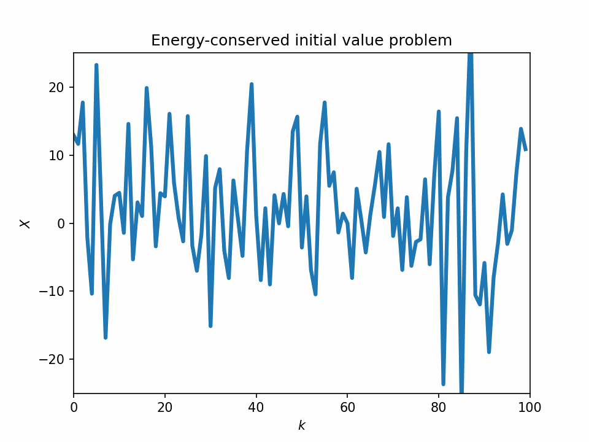
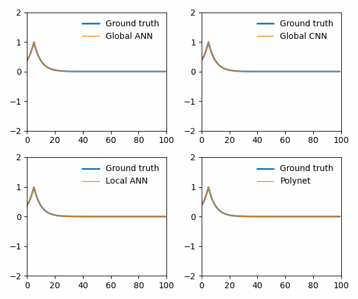

CNNs and Polynomial Maps#
import matplotlib
import numpy as np
import matplotlib.pyplot as plt
import matplotlib
import os
from IPython import display
import torch
from torch.autograd import Variable
import torch.utils.data as Data
from torch import nn, optim
from L96_model import L96, EulerFwd, RK2, RK4
from utils import GCM_no_param # The GCM object based on prior tutorials
from utils import GCM_discrete # New GCM with tendency by global network
from utils import GCM_local_discrete # New GCM with tendency by local network
from utils import Net_ANN # Import a simple neural network
from utils import (
train_model,
) # Train model for each epoch (Adapted from Yani's tutorial)
from utils import test_model # Calculate loss (Adapted from Yani's tutorial)
from utils import train_network # Wrapper function for training a neural network
from utils import (
gen_local_training_data,
) # Generate individual patches as training data
from utils import (
get_poly_features,
) # Generate 2nd-order polynomial features from patches
# Import Burger's equation class
from utils import Burgers
%matplotlib notebook
I. Introduction#
The petagogical model we use to illustrate different methods at M2LInES is the [Lorenz-96 model](file:///Users/ziweili/Downloads/10829-predictability-problem-partly-solved.pdf) by Edward Lorenz published in 1996. However, Ed Lorenz did not provide much physical reasoning behind the equation, and the dynamics of the slow, large-scale variables and fast, small-scale variables are seemingly ad-hoc. To see how, consider the original L96 equation:
The advection terms of \(X\) and \(Y\) are similar to the usual 1D advection form:
but the advection term in \(X\) is negative compared with the usual momentum conservation in fluid dynamics: \(Du = 0\Rightarrow \partial_t u = - u\nabla u\).
To simplify the problem a little bit, and understand the skill and stability of machine-learning algorithms when they are applied to physical systems, we consider the 1-variable version of the L96 system. This approach is similar to Brandon Reichl’s approach (see notebook at this link). Here we use this view to consider the performance of the following networks:
Local ANN
Local polynomial stencils
Global CNN
Global ANN
One-variable L96 equation#
The one-variable L96 equation writes
To see how machine learning helps us with simulating Earth’s dynamics, we use three approaches to simulate the 1-variable L96 system. Our approach is based on the following principles:
The networks’ perception fields must be local, as required by physical laws and the practical constraints of implementation.
The network structure must obey symmetries. They should be translational invariant, and is compatible with periodic boundary conditions.
The complexity of the networks must be small for interpretability.
Local networks#
In one-dimensional setting, we define local maps as the following approximation problem: given a receptive field of the network of width \((2m+1)\): \(\mathbf{X^{(m)}_k} = (X_{k-m}, ..., X_{k}, ..., X_{k+m})\), we approximate function \(f(\mathbf{X^{(m)}_k})\) such that
In this tutorial, we set \(m = 2\), and the local map is illustrated in the following figure:
{kind=link}
we choose the functional form, \(f(\cdot)\), to be one of the following two choices, simple feedforward neural network, and polynomial stencils.
1. Simple feedforward neural network (ANN)#
The feedforward neural network is embedded in the GCM, replacing all terms on the right-hand-side. For this tutorial, the network is fully connected, has two hidden layers with 10 neurons each, and has \(tanh()\) as its activation function. The structure can be seen in the following figure:
{kind=link}
2. Polynomial stencil#
Physical dynamical systems are usually written as ODEs and PDEs, and when they are solved numerically, they are discretized in space and time into regular ODE sets (whether it’s in the spectral space or in the real space). Take the real space discretization for example, the terms on the right-hand side usually take the form of polynomials of the information from adjacent points. The one-variable L96 system is a nice example:
{kind=link}
Global networks#
1. Global convolutional neural network (global CNN)#
We apply a simple global convolutional neural network to predict future tendencies. The network has a filter width of 5 (consistent with \(m = 2\) as above), 2 covolutional layers and 2 fully connected-layers with 100 neurons each. The first convolution layer has 1 channel as input, 2 channels as output, and the second convolution layer has 2 channels as input, 4 channels as output.
{kind=link}
2. Global feedforward neural network (global ANN)#
As a point of comparison with the global CNN, we also train a global ANN with takes in global field and predicts global tendencies.
Define GCM objects#
Here, we define GCM objects for
the 1-variable L96 equation
the L96 system with tendency represented by global networks (global ANN, global CNN)
the L96 system with tendency represented by local networks (local ANN, polynet)
Define neural network objects#
# Define a convolutional neural network object
class Net_CNN(nn.Module):
def __init__(
self,
inout_size=[100, 100],
kernel_size=5,
hidden_neurons=[20, 20],
strides=[1, 1],
channels=[2, 4],
):
# Class of a very simple 1-dimensional convolutional neural network. This network contains
# 2 convolutional layers with different channels channel each, and 2 fully-connected layers
# after the convolutional layers.
# Input parameters:
#
# inout_size: A 2-element list, the first element contains the input size;
# the second element contains the output size.
#
# kernel_size: The size of the convolutional kernel. Same across all conv layers
#
# hidden_neurons: List of hidden neurons of the fully-connected layers after the conv layers
# Inherit from default class
super(Net_CNN, self).__init__()
# Set padding to half the size of the kernel, and padding mode to periodic (circular)
padding = kernel_size // 2
padding_mode = "circular"
# Set dilation to 1, i.e., no dilation
dilation = 1
# Define two convolutional layers
self.conv1 = torch.nn.Conv1d(
1,
channels[0],
kernel_size,
stride=strides[0],
padding=padding,
padding_mode=padding_mode,
)
self.conv2 = torch.nn.Conv1d(
channels[0],
channels[1],
kernel_size,
stride=strides[1],
padding=padding,
padding_mode=padding_mode,
)
# Define a function to calculate the dimensionality of the input to the fully-connected layer
# (see definition of L_out in https://pytorch.org/docs/stable/generated/torch.nn.Conv1d.html)
output_size = lambda L_in, padding, dilation, kernel_size, stride: int(
(L_in + 2 * padding - dilation * (kernel_size - 1) - 1) / stride + 1
)
# Use the function to calculate the flattened output size of the convolutional layers
output_size1 = output_size(
inout_size[0], padding, dilation, kernel_size, strides[0]
)
output_size2 = output_size(
output_size1, padding, dilation, kernel_size, strides[1]
)
# Assign information to be used in the fully connected layer and self.forward()
self.output_size2 = output_size2
self.channels = channels
# Define fully-connected layers after the convolutional layers
self.linear1 = nn.Linear(output_size2 * channels[1], hidden_neurons[0])
self.linear2 = nn.Linear(hidden_neurons[0], hidden_neurons[1])
self.linear3 = nn.Linear(hidden_neurons[1], inout_size[1])
def forward(self, x):
x = torch.relu(self.conv1(x)) # Convolution layer 1
x = torch.relu(self.conv2(x)) # Convolution layer 2
x = x.view(-1, 1, self.channels[1] * self.output_size2) # Flatten
x = torch.tanh(self.linear1(x)) # Fully-connected layer 1
x = torch.tanh(self.linear2(x)) # Fully-connected layer 2
x = self.linear3(x)
return x
Simulate 1-variable L96 equation as ground truth#
The 1-variable simulation has 100 grid points of \(X\), and is run 20000 timesteps with \(dt = 0.001\).
np.random.seed(14) # For reproducibility
torch.manual_seed(14) # For reproducibility
plot_path = "./figs/"
if not os.path.isdir(plot_path):
os.mkdir(plot_path)
# Default case, 1-variable L96
K = 100 # The number of slow variables, and
J = 0 # The number of fast variables per slow variable, set to 0
F = 18 # Constant external forcing
h = 0 # No interaction with subgrid scale
dt = 0.001 # Timestep
# Define an 1-variable L96 object
W = L96(K, J, F=F, dt=dt, h=h)
# Define total timesteps, time, and sampling interval
Nt = 20000 # Total timesteps
T = dt * Nt # Total time of simulation
si = dt # Sampling interval
# Run the L96 model as the ground truth
X_true_temp = W.run(si, T, store=True)[0]
X_true = X_true_temp[:-1, :]
dX_true = X_true_temp[1:, :] - X_true_temp[:-1, :]
del X_true_temp
Train neural networks with local and global setup, and evaluate their performance#
First, we define some training parameters. These training parameters are the same across all training procedures in this notebook.
train_size = 2000 # Number of training data
test_size = 400 # Number of test data
batch_size = 100 # Number of training data per batch
n_epochs = 1000 # Total number of epochs
1. Train a global CNN#
The global CNN has 2 convolution layers with ReLU activation, and 2 fully connected layers with tanh activation. The number of input/output channels of the two convolutional layers are all 1. The fully-connected layers has 100 hidden neurons each.
First, we define training data for the global network.
# Define a random index to select training and test data
ind = np.random.choice(X_true.shape[0], train_size + test_size)
# Add one extra dimension to represent channels
X_feature_train_global = X_true[ind[:train_size], :][:, np.newaxis, :]
X_target_train_global = dX_true[ind[:train_size], :][:, np.newaxis, :]
X_feature_test_global = X_true[ind[train_size:], :][:, np.newaxis, :]
X_target_test_global = dX_true[ind[train_size:], :][:, np.newaxis, :]
# Define CNN parameters
inout_size = [K, K] # Input and output dimensions, global field
kernel_size = 5 # Kernel width
channels = [2, 4] # Number of channels of the first and second layer
hidden_neurons = [100, 100] # Number of hidden neurons of the fully-connected layers
# Define a global CNN
net_CNN_global = Net_CNN(
inout_size=inout_size,
kernel_size=kernel_size,
hidden_neurons=hidden_neurons,
channels=channels,
).double()
# Train the global CNN using global data
net_CNN_global, train_loss_CNN, test_loss_CNN = train_network(
net_CNN_global,
X_feature_train_global,
X_target_train_global,
X_feature_test_global,
X_target_test_global,
batch_size=batch_size,
n_epochs=n_epochs,
)
epoch = 1000, traing loss = 1.820713e-05, test loss = 3.095299e-05
2. Train a global ANN#
The global ANN has 2 hidden layers with 100 hidden neurons each.
# Define a global ANN
net_ANN_global = Net_ANN([K, 100, 100, K], filter_loc=[0]).double()
# Train the global ANN using global data
net_ANN_global, train_loss_ANN_global, test_loss_ANN_global = train_network(
net_ANN_global,
X_feature_train_global,
X_target_train_global,
X_feature_test_global,
X_target_test_global,
batch_size=batch_size,
n_epochs=n_epochs,
)
epoch = 1000, traing loss = 2.221758e-04, test loss = 2.898207e-04
3. Train a local polynomial map#
To train local maps, we first generate training data as local information around a grid point. Here, we define a local stencil that extends 2 grid points to the left and right.
# Define the local map location
filter_start = -2
filter_end = 2 # 5 points: k+2, k+1, k, k-1, k-2
filter_loc = np.arange(filter_start, filter_end + 1) # Filter location list
# Generate local maps consistent with the geometry of the stencil
X_local_train, dX_train, X_local_test, dX_test = gen_local_training_data(
X_true, dX_true, filter_loc, train_size, test_size
)
# Generate polynomial features from data
X_feature_train_poly = get_poly_features(X_local_train) # Training data
X_feature_test_poly = get_poly_features(X_local_test) # Test data
# Define a polynet as a regular ANN, with no hidden layers and a single bias
net_poly = Net_ANN([X_feature_train_poly.shape[-1], 1], filter_loc=filter_loc).double()
# Train the polynet
net_poly, train_loss_poly, test_loss_poly = train_network(
net_poly,
X_feature_train_poly,
dX_train,
X_feature_test_poly,
dX_test,
batch_size=batch_size,
n_epochs=n_epochs,
)
epoch = 1000, traing loss = 2.317021e-07, test loss = 1.979235e-07
4. Train a local ANN map#
Using the local information from above, we train a local ANN as another point of comparison. This local ANN has two hidden layers with 10 neurons each, and has \(tanh()\) as activation function.
# Define a regular ANN consistent with the local map
net_ANN_local = Net_ANN([len(filter_loc), 10, 10, 1], filter_loc=filter_loc).double()
# Train the local ANN
net_ANN_local, train_loss_ANN, test_loss_ANN = train_network(
net_ANN_local,
X_local_train,
dX_train,
X_local_test,
dX_test,
batch_size=batch_size,
n_epochs=n_epochs,
)
epoch = 1000, traing loss = 1.124198e-05, test loss = 1.063997e-05
Display training error#
dX_var = dX_train.var()
fig = plt.figure(figsize=(6, 5), dpi=150)
plt.plot(train_loss_ANN_global / dX_var, color="tab:blue", label="global ANN")
plt.plot(test_loss_ANN_global / dX_var, ":", color="tab:blue")
plt.plot(train_loss_CNN / dX_var, color="tab:red", label="global CNN")
plt.plot(test_loss_CNN / dX_var, ":", color="tab:red")
plt.plot(train_loss_ANN / dX_var, color="tab:grey", label="local ANN")
plt.plot(test_loss_ANN / dX_var, ":", color="tab:grey")
plt.plot(train_loss_poly / dX_var, color="tab:orange", label="local polynet")
plt.plot(test_loss_poly / dX_var, ":", color="tab:orange")
plt.yscale("log")
plt.legend(fontsize=7)
plt.title("Normalized MSE loss of different models")
plt.xlabel("Epochs")
plt.ylabel("Normalized MSE");
II. Test predictions of the networks#
global ANN, global CNN, local ANN, and polynomial stencils
# Prediction parameters
temp_dt = si # Timestep same as the sampling interval (same as training data)
t_plot = int(T / temp_dt) # Total testing timesteps
t_series_plot = np.arange(0, t_plot + 1) * temp_dt
# Define GCM objects with tendencies represented by networks
gcm_ANN = GCM_discrete(net_ANN_global)
gcm_CNN = GCM_discrete(net_CNN_global)
gcm_local_ANN = GCM_local_discrete(net_ANN_local, None)
gcm_local_poly = GCM_local_discrete(net_poly, get_poly_features)
Instantaneous predictions#
# Instataneous predictions by polynomial network and tanh network
X_predict_poly = np.zeros(X_true.shape)
X_predict_local_ANN = np.zeros(X_true.shape)
X_predict_global_ANN = np.zeros(X_true.shape)
X_predict_global_CNN = np.zeros(X_true.shape)
for t in range(X_true.shape[0] - 1):
X_predict_poly[t + 1, :] = gcm_local_poly(X_true[t, :], 1)[1, :]
X_predict_local_ANN[t + 1, :] = gcm_local_ANN(X_true[t, :], 1)[1, :]
X_predict_global_ANN[t + 1, :] = gcm_ANN(X_true[t, :], 1)[1, :]
X_predict_global_CNN[t + 1, :] = gcm_CNN(X_true[t, :], 1)[1, :]
X_plot = 9 # Example variable, the 9th grid point
fig = plt.figure(figsize=[5, 5])
t_ind = np.arange(1000, 11000)
plt.figure(dpi=150)
plt.title("Instantaneous predictions (shifted)")
plt.plot(
dX_true[t_ind, X_plot],
0.03
+ X_predict_global_ANN[t_ind + 1, X_plot]
- X_predict_global_ANN[t_ind, X_plot],
label="global ANN",
)
plt.plot(
dX_true[t_ind, X_plot],
0.02
+ X_predict_global_CNN[t_ind + 1, X_plot]
- X_predict_global_CNN[t_ind, X_plot],
label="global CNN",
)
plt.plot(
dX_true[t_ind, X_plot],
0.01 + X_predict_poly[t_ind + 1, X_plot] - X_predict_poly[t_ind, X_plot],
label="local polynet",
)
plt.plot(
dX_true[t_ind, X_plot],
X_predict_local_ANN[t_ind + 1, X_plot] - X_predict_local_ANN[t_ind, X_plot],
label="local ANN",
)
plt.legend(frameon=False, fontsize=7)
plt.ylim([-0.3, 0.2])
plt.xlim([-0.3, 0.2])
plt.xlabel(r"Ground truth $dX_{0}$".format(X_plot))
plt.ylabel(r"Predicted $dX_{0}$".format(X_plot))
plt.tight_layout();
Time-dependent initial-value simulations#
# Perform simulations with the GCM objects
init_cond = X_true[0, :]
X_simulation_global_ANN = gcm_ANN(init_cond, t_plot)
X_simulation_global_CNN = gcm_CNN(init_cond, t_plot)
X_simulation_local_ANN = gcm_local_ANN(init_cond, t_plot)
X_simulation_poly = gcm_local_poly(init_cond, t_plot)
# Perform the groud truth simulation
gcm_no_param = GCM_no_param(F, time_stepping=RK4)
X_no_param, _ = gcm_no_param(init_cond, temp_dt, t_plot)
# Show trajectories of a single variable
temp_t = min([X_no_param.shape[0], 1200])
t_ind = np.arange(0, 1000)
fig = plt.figure(figsize=[9, 4], dpi=150)
plt.subplot(1, 2, 1)
plt.title("Initial-value simulations, $X_9$")
plt.plot(t_series_plot[t_ind], X_no_param[t_ind, X_plot], "k", label="Truth")
plt.plot(
t_series_plot[t_ind],
X_simulation_global_ANN[t_ind, X_plot],
"-.",
label="Global ANN",
)
plt.plot(
t_series_plot[t_ind],
X_simulation_global_CNN[t_ind, X_plot],
"-.",
label="Global CNN",
)
plt.plot(
t_series_plot[t_ind], X_simulation_poly[t_ind, X_plot], "--", label="Local polynet"
)
plt.plot(
t_series_plot[t_ind], X_simulation_local_ANN[t_ind, X_plot], "--", label="Local ANN"
)
plt.legend(frameon=False, loc="best", fontsize=7)
plt.xlabel("Time")
plt.ylabel(r"$X_{0:d}$".format(X_plot))
fig.tight_layout()
# Energy conservation
plt.subplot(1, 2, 2)
plt.title("Initial-value simulations, energy")
plt.plot(t_series_plot[t_ind], np.sum(X_no_param[t_ind, :] ** 2, 1), "k", label="Truth")
plt.plot(
t_series_plot[t_ind],
np.sum(X_simulation_global_ANN[t_ind, :] ** 2, 1),
"-.",
label="Global ANN",
)
plt.plot(
t_series_plot[t_ind],
np.sum(X_simulation_global_CNN[t_ind, :] ** 2, 1),
"-.",
label="Global CNN",
)
plt.plot(
t_series_plot[t_ind],
np.sum(X_simulation_poly[t_ind, :] ** 2, 1),
"--",
label="Local polynet",
)
plt.plot(
t_series_plot[t_ind],
np.sum(X_simulation_local_ANN[t_ind, :] ** 2, 1),
"--",
label="Local ANN",
)
plt.legend(frameon=False, loc="best", fontsize=7)
plt.ylim(np.array([0, 2]) * np.sum(init_cond**2))
plt.xlabel("Time")
plt.ylabel(r"Energy ($|\mathbf{X}|^2$)")
fig.tight_layout();
Show parameters learned by the polynet#
# Define a function to show parameters in the polynet
def plot_parameters(net_poly, si, filter_loc, var_str, weights_true):
# Store the weights of the polynomial networks and normalize by sampling interval
weights_poly = (list(net_poly.named_parameters())[0][1].data.numpy() / si).squeeze()
n = len(filter_loc)
n_feature = int(n + n + n * (n - 1) / 2)
from itertools import combinations
index_list = list(combinations(np.arange(n) + filter_loc[0], 2))
x_plot = np.arange(n_feature) * 0.8
def label_part(f):
if f > 0:
return r"+{0:d}".format(f)
elif f < 0:
return r"-{0:d}".format(-f)
elif f == 0:
return r""
xlabels = (
[r"$" + var_str + "_{k" + label_part(-f) + "}$" for f in filter_loc]
+ [r"$" + var_str + "^2_{k" + label_part(-f) + "}$" for f in filter_loc]
+ [
r"$"
+ var_str
+ "_{k"
+ label_part(-index[0])
+ "}"
+ var_str
+ "_{k"
+ label_part(-index[1])
+ "}$"
for index in index_list
]
)
# Scatter plot
fig = plt.figure(figsize=[9, 3])
cmap = matplotlib.colormaps["bone_r"]
plt.bar(
x_plot - 0.10,
weights_poly,
label="Polynet",
color="tab:blue",
edgecolor="k",
width=0.15,
)
plt.bar(
x_plot + 0.10,
weights_true,
label="Truth",
color="tab:brown",
edgecolor="k",
width=0.15,
)
plt.plot([x_plot[0] - 5, x_plot[-1] + 5], np.zeros(2), "--k", linewidth=1.0)
plt.legend(frameon=False, loc="best")
plt.xticks(x_plot, rotation=-30)
plt.gca().set_xticklabels(xlabels)
plt.xlim([x_plot[0] - 1, x_plot[-1] + 1])
fig.tight_layout()
# Show parameters learned by the polynet
weights_true = np.array([0, 0, -1, 0, 0, 0, 0, 0, 0, 0, 0, 0, 0, 0, 0, 1, 0, 0, 0, -1])
plot_parameters(net_poly, si, filter_loc, "X", weights_true)
Compare with the original 1-variable L96 equation:
we see that the polynomial stencil can reconstruct the advection term and the exponential decay term.
III. Energy-conserved case#
It would be interesting to see the performance of ANN, CNN, and polynomial stencils when the underlying system conserves energy:
Train networks#
F = 0 # no forcing
a = 0 # no exponential decay
h = 0 # no interaction with subgrid scale
Nt = 20000
dt = 0.001
si = dt # Sampling interval
T = dt * Nt # Total time of simulation
K = 100 # The number of slow variables, and
J = 0 # The number of fast variables, set to 0
# Define the ground truth model to generate training data
W = L96(K, J, F=F, dt=dt, h=h)
from utils import run_analysis
(
net_ANN_global_2,
net_CNN_global_2,
net_ANN_local_2,
net_poly_2,
X_true_2,
dX_true_2,
) = run_analysis(W, si, T, n_epochs=n_epochs)
training global CNN
epoch = 1000, traing loss = 2.475079e-08, test loss = 1.048361e-07
training global ANN
epoch = 1000, traing loss = 2.270146e-08, test loss = 2.260663e-06
training local polynet
epoch = 1000, traing loss = 4.540985e-09, test loss = 2.419624e-08
training local ANN
epoch = 1000, traing loss = 1.515881e-06, test loss = 2.457820e-05
Generate simulation data with networks trained on the energy-conserved case#
#### Test predictions
temp_dt = si
t_plot = X_true_2.shape[0] - 1
t_series_plot = np.arange(0, t_plot + 1) * temp_dt
# Define GCM objects using the trained networks
gcm_ANN = GCM_discrete(net_ANN_global_2)
gcm_CNN = GCM_discrete(net_CNN_global_2)
gcm_local_ANN = GCM_local_discrete(net_ANN_local_2, None)
gcm_local_poly = GCM_local_discrete(net_poly_2, get_poly_features)
# Instataneous predictions by polynomial network and tanh network
X_predict_poly = np.zeros(X_true_2.shape)
X_predict_local_ANN = np.zeros(X_true_2.shape)
X_predict_global_ANN = np.zeros(X_true_2.shape)
X_predict_global_CNN = np.zeros(X_true_2.shape)
for t in range(X_true_2.shape[0] - 1):
X_predict_poly[t + 1, :] = gcm_local_poly(X_true_2[t, :], 1)[1, :]
X_predict_local_ANN[t + 1, :] = gcm_local_ANN(X_true_2[t, :], 1)[1, :]
X_predict_global_ANN[t + 1, :] = gcm_ANN(X_true_2[t, :], 1)[1, :]
X_predict_global_CNN[t + 1, :] = gcm_CNN(X_true_2[t, :], 1)[1, :]
# Perform simulations with the GCM objects
init_cond = X_true_2[0, :]
X_simulation_global_ANN = gcm_ANN(init_cond, t_plot)
X_simulation_global_CNN = gcm_CNN(init_cond, t_plot)
X_simulation_local_ANN = gcm_local_ANN(init_cond, t_plot)
X_simulation_poly = gcm_local_poly(init_cond, t_plot)
# Perform the groud truth simulation with different forward-stepping schemes
# 1. RK4
gcm_no_param = GCM_no_param(F, time_stepping=RK4)
X_no_param, _ = gcm_no_param(init_cond, temp_dt, t_plot)
# 2. RK2
gcm_no_param_RK2 = GCM_no_param(F, time_stepping=RK2)
X_no_param_RK2, _ = gcm_no_param_RK2(init_cond, temp_dt, t_plot)
# 3. Euler
gcm_no_param_Euler = GCM_no_param(F, time_stepping=EulerFwd)
X_no_param_Euler, _ = gcm_no_param_Euler(init_cond, temp_dt, t_plot)
Plot instantaneous prediction#
X_plot = 9 # Example variable, the 9th grid point
fig = plt.figure(figsize=[5, 5])
t_ind = np.arange(1000, 11000)
plt.figure(dpi=150)
plt.title("Instantaneous predictions (shifted)")
plt.plot(
dX_true_2[t_ind, X_plot],
0.18
+ X_predict_global_ANN[t_ind + 1, X_plot]
- X_predict_global_ANN[t_ind, X_plot],
label="global ANN",
)
plt.plot(
dX_true_2[t_ind, X_plot],
0.12
+ X_predict_global_CNN[t_ind + 1, X_plot]
- X_predict_global_CNN[t_ind, X_plot],
label="global CNN",
)
plt.plot(
dX_true_2[t_ind, X_plot],
0.06 + X_predict_poly[t_ind + 1, X_plot] - X_predict_poly[t_ind, X_plot],
label="local polynet",
)
plt.plot(
dX_true_2[t_ind, X_plot],
X_predict_local_ANN[t_ind + 1, X_plot] - X_predict_local_ANN[t_ind, X_plot],
label="local ANN",
)
plt.legend(frameon=False, fontsize=7)
# plt.ylim([-0.3, 0.2])
# plt.xlim([-0.3, 0.2])
plt.xlabel(r"Ground truth $dX_{0}$".format(X_plot))
plt.ylabel(r"Predicted $dX_{0}$".format(X_plot))
plt.tight_layout();
# Evolution of one variable
temp_t = min([X_no_param.shape[0], 1200])
X_plot = 9
t_ind = np.arange(0, 2000)
fig = plt.figure(figsize=[8, 6])
plt.subplot(2, 1, 1)
plt.title("Initial-value simulations, $X_9$")
plt.plot(t_series_plot[t_ind], X_no_param[t_ind, X_plot], "k", label="Truth (RK4)")
plt.plot(
t_series_plot[t_ind], X_no_param_Euler[t_ind, X_plot], "grey", label="Truth (Euler)"
)
plt.plot(
t_series_plot[t_ind],
X_simulation_global_ANN[t_ind, X_plot],
"-.",
label="global ANN",
)
plt.plot(
t_series_plot[t_ind],
X_simulation_global_CNN[t_ind, X_plot],
"-.",
label="global CNN",
)
plt.plot(
t_series_plot[t_ind], X_simulation_poly[t_ind, X_plot], "--", label="local polynet"
)
plt.plot(
t_series_plot[t_ind], X_simulation_local_ANN[t_ind, X_plot], "--", label="local ANN"
)
plt.legend(frameon=False, loc="best")
plt.xlabel("Time")
plt.ylabel(r"$X_{0:d}$".format(X_plot))
plt.xlim([-0.1, 3])
plt.ylim([-80, 80])
fig.tight_layout()
# Energy evolution
plt.subplot(2, 1, 2)
plt.title("Initial-value simulations, energy")
plt.plot(
t_series_plot[t_ind], np.sum(X_no_param[t_ind, :] ** 2, 1), "k", label="Truth (RK4)"
)
plt.plot(
t_series_plot[t_ind],
np.sum(X_no_param_Euler[t_ind, :] ** 2, 1),
"grey",
label="Truth (Euler)",
)
plt.plot(
t_series_plot[t_ind],
np.sum(X_simulation_global_ANN[t_ind, :] ** 2, 1),
"-.",
label="global ANN",
)
plt.plot(
t_series_plot[t_ind],
np.sum(X_simulation_global_CNN[t_ind, :] ** 2, 1),
"-.",
label="global CNN",
)
plt.plot(
t_series_plot[t_ind],
np.sum(X_simulation_poly[t_ind, :] ** 2, 1),
"--",
label="local polynet",
)
plt.plot(
t_series_plot[t_ind],
np.sum(X_simulation_local_ANN[t_ind, :] ** 2, 1),
"--",
label="local ANN",
)
plt.legend(frameon=False, loc="best")
plt.ylim(np.array([0, 2]) * np.sum(init_cond**2))
plt.xlabel("Time")
plt.ylabel(r"Energy ($|\mathbf{X}|^2$)")
plt.xlim([-0.1, 3])
fig.tight_layout();
III. A more realistic model: the Burger’s equation#
Problem with the 1-variable L96 equation#
One problem with the L96 model is that it sometimes lacks the physical basis. If we look at the temporal evolution of the 1-variable L96 equation, we see that its dynamics look quite unstable, and most of its variabilities can be numerical artifacts.
Start from a bump initial condition
# Energy conserving case, 1-variable L96
K = 100 # The number of slow variables, and
J = 0 # The number of fast variables per slow variable, set to 0
F = 0 # no external forcing
a = 0 # no exponential decay
h = 0 # no interaction with subgrid scale
# Set a bump initial condition
x = np.arange(0, K)
X_init = np.exp(-(((x - x.mean()) / K * 10) ** 2)) * 10
W_conserve = L96(K, J, F=F, dt=dt, h=h)
(
X_true_3,
_,
_,
) = W_conserve.run(si, T, store=True)
# Animate conservative 1-variable L96 equation
plt.ioff() # close notebook mode
from matplotlib.animation import FuncAnimation
interval = 10
frames = 200
fig = plt.figure(dpi=150)
ax = plt.axes(xlim=(0, K), ylim=(-25, 25))
plt.title("Energy-conserved initial value problem")
(line,) = ax.plot([], [], lw=3)
plt.xlabel(r"$k$")
plt.ylabel(r"$X$")
def init():
line.set_data([], [])
return (line,)
def animate(i):
x = np.arange(0, K)
y = X_true_3[i * 15, :]
line.set_data(x, y)
return (line,)
anim = FuncAnimation(fig, animate, init_func=init, frames=frames, interval=1, blit=True)
gif_name = os.path.join(plot_path, "L96_one_variable.gif")
anim.save(gif_name, writer="pillow")
# reopen inline mode
%matplotlib notebook

The 1-variable energy-conserved case with the L96 system is just an advection equation with the sign of the sign advection term flipped:
We can find much similarity with the Burger’s equation.
The Burger’s equation#
To see the performance of the neural networks on a more realistic model, we use the Burger’s equation as an example. The Burger’s equation is an advection-diffusion equation. It has a diffusive term which reduces the tendency to develop shock waves and numerical instabilities.
When discretized with simple finite difference, the tendency of \(u\) at a particular location be written as functions of adjacent variables
which makes it an ideal target for learning local maps with machine-learning algorithms.
Generate training data from Burger’s equation#
# Define parameters of the Burger's equation
nu = 0.3
dx = 1
K = 100
dt = 0.01
T = 100
si = dt
x = np.arange(0, K)
# Use two sets of initial-value simulations for training
W1 = Burgers(K, nu, dx, dt=dt)
init_cond1 = np.exp(-(((x - x.mean()) / K * 10) ** 2))
W1.set_init(init_cond1)
init_cond2 = -np.exp(-np.abs((x - x.mean()) / K * 15))
W2 = Burgers(K, nu, dx, dt=dt)
W2.set_init(init_cond2)
plt.figure(dpi=150)
plt.plot(init_cond1, lw=2, label="initial condition 1")
plt.plot(init_cond2, lw=2, label="initial condition 2")
plt.legend(frameon=False, fontsize=7)
plt.xlabel("k")
plt.ylabel("u");
Train the same set of networks with the Burger’s equation#
# Import a wrapper function to perform all of the training above
from utils import run_analysis
(
net_ANN_global_burger,
net_CNN_global_burger,
net_ANN_local_burger,
net_poly_burger,
X_true_burger,
dX_true_burger,
) = run_analysis([W1, W2], si, T, n_epochs=n_epochs, Poly_init=True)
training global CNN
epoch = 1000, traing loss = 1.443418e-08, test loss = 1.438685e-08
training global ANN
epoch = 1000, traing loss = 4.980171e-09, test loss = 5.035909e-09
training local polynet
epoch = 1000, traing loss = 6.165268e-12, test loss = 5.961172e-12
training local ANN
epoch = 1000, traing loss = 2.302375e-08, test loss = 2.148764e-08
#### Test predictions with a different initial condition
gcm_ANN = GCM_discrete(net_ANN_global_burger)
gcm_CNN = GCM_discrete(net_CNN_global_burger)
gcm_local_ANN = GCM_local_discrete(net_ANN_local_burger, None)
gcm_local_poly = GCM_local_discrete(net_poly_burger, get_poly_features)
# Define a different initial condition
x = np.arange(0, K)
t_plot = int(T / si)
init_cond = np.exp(-np.abs((x - 0.1 * x.mean()) / K * 20))
# Calculate ground truth using Burger's equation
W1.set_init(init_cond)
X_simulation_truth = W1.run(si, T, store=True)[0]
# Calculate initial-value simulations with the trained networks
X_simulation_global_ANN = gcm_ANN(init_cond, t_plot)
X_simulation_global_CNN = gcm_CNN(init_cond, t_plot)
X_simulation_local_ANN = gcm_local_ANN(init_cond, t_plot)
X_simulation_poly = gcm_local_poly(init_cond, t_plot)
plt.ioff()
from utils import animate_Burgers
animate_Burgers(
X_simulation_truth,
X_simulation_global_ANN,
X_simulation_global_CNN,
X_simulation_local_ANN,
X_simulation_poly,
plot_path,
)
%matplotlib notebook

weights_true = np.array(
[
0,
nu / dx**2,
-2 * nu / dx**2,
nu / dx**2,
0,
0,
0,
0,
0,
0,
0,
0,
0,
0,
-1 / 2 / dx,
0,
0,
1 / 2 / dx,
0,
0,
]
)
filter_start = -2
filter_end = 2
# this includes k+2, k+1, k, k-1, k-2, note that roll by +2 means looking at location k-2
filter_loc = np.arange(filter_start, filter_end + 1)
plot_parameters(net_poly_burger, si, filter_loc, "u", weights_true)
The polynet appropriately recovers the terms in the Burger’s equation:
Conclusions#
Convolutional neural networks has better error performance during training, partially due to its added complexity
Local maps is potentially more useful than global maps in the following aspects:
It achieves better performance in initial-value simulations with smaller number of parameters, energy-conservation properties, and less training data.
It is not constrained by training data geometry – can be easily generalized to larger simulation domains.
It does not need access to global data
Local maps are more explanable due to its simplified structure and parameters
Local polynomial stencils might be useful as an alternative functional class than off-the-shelf ML algorithms.